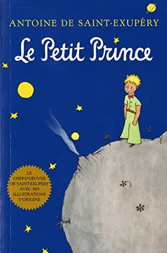
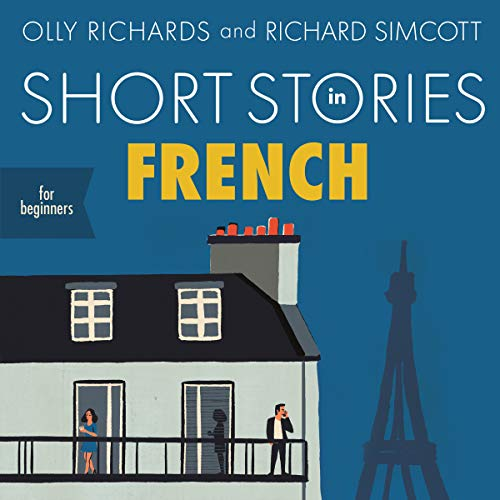
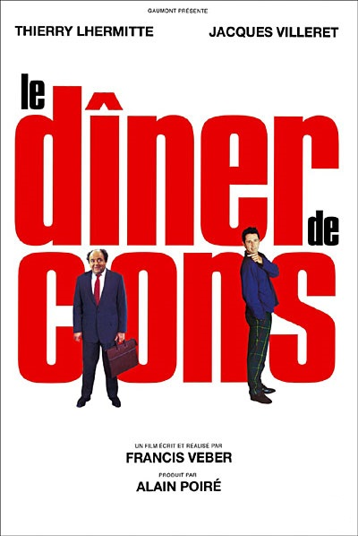
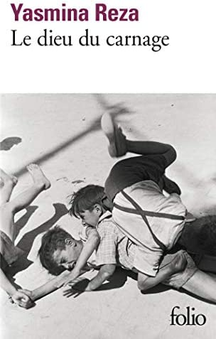
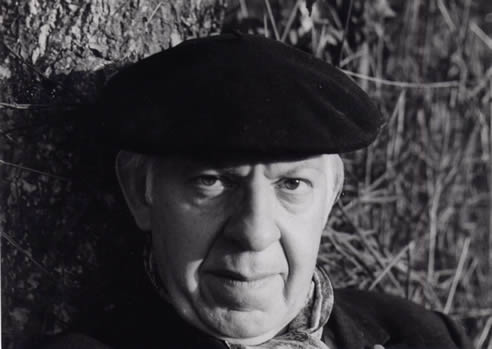

-French Books, Poetry & Plays-
Beginners:
Le Petit Prince (Book)
Classic: Yes
Famous/Renowned: Yes
Date: April 6, 1943
Author: Antoine de Saint-Exupéry
Plot:
A story about a lost explorer
and a prince from another planet
6 planets, and countless imagination!
Highly Recommended

Short Stories in French (Book)
Classic: No
Famous/Renowned: Yes
Date: Oct 4, 2018
Author: Olly Richards, Richard Simcott
Plot:
Eight fascinating
short stories all made for
beginners!
Highly Recommended

Le dîner de cons (Play)
Classic: No
Famous/Renowned: Yes
Date: 1998
Playwright: Francis Veber
Plot:
A humorous
play on a dinner of friends
but with an idiotic twist!
Dialogue: direct and short

Le dieu du carnage (Play)
Classic: No
Famous/Renowned: Ish
Date: 2006
Playwright: Yasmina Reza
Plot:
A dark modern play about family,
but not in the way you think.
Dialogue: A bit more complex

La Tour Eiffel (Poem)
Classic: Ish
Famous/Renowned: Yes
Poet: Maurice Carême (Belgian)
Point:
A sweet, lovely look on Paris
Dialogue: A bit more complex
Poem:
Mais oui, je suis une girafe,
M'a raconté la tour Eiffel,
Et si ma tête est dans le ciel,
C'est pour mieux brouter les nuages,
Car ils me rendent éternelle.
Mais j'ai quatre pieds bien assis
Dans une courbe de la Seine.
On ne s'ennuie pas à Paris :
Les femmes, comme des phalènes,
Les hommes, comme des fourmis,
Glissent sans fin entre mes jambes
Et les plus fous, les plus ingambes
Montent et descendent le long
De mon cou comme des frelons
La nuit, je lèche les étoiles.
Et si l'on m'aperçoit de loin,
C'est que très souvent, j'en avale
Une sans avoir l'air de rien.
English Translation
